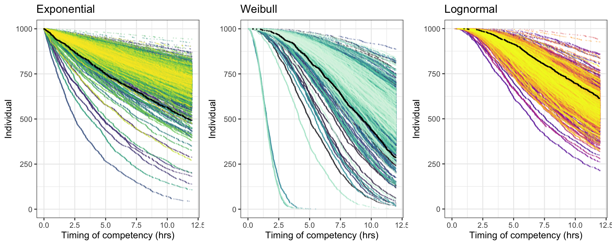

coralseed uses time-to-event models to parameterise
time-to-competency across individual particle tracks. Time-to-event
models (frequently used in survival analysis) are statistical models
designed to analyse the time until a particular event in time censored
data such as settlement experiments. The initial parameterisation of
coralseed is based on a competency experiment from wild
coral slicks where settlement was censored at hourly timepoints (see
instructions.html for experimental details). Models were fit using
multilevel time-to-event models in brms:
brm(minutes | cens(1 - settled) ~ (1 | w | tile),
family = exponential(link = "log"), init = 0,
control = list(adapt_delta = 0.99, max_treedepth = 20),
cores=8, chains=4, iter = 10000)To parameterise time-to-competency, coralseed samples
from posterior draws from brms:
as_draws_df(event_model_exp) To allow for differences in model parameterisation and larval
competency curves, coralseed is flexible in
paramaterisation in that it accepts posterior parameter draws from a
range of distributions (log-normal,
exponential, weibull, see
paramater_draws_ .rds files below), and can be updated with
different datasets to give different time-to-competency curves for
future experimental datasets.
To incorporate variance in model outputs, coralseed
samples from brms posterior draws (10,000 simulations in
the example dataset). coralseed can then be run in smaller
multiples (e.g. 1000 particle tracks) subsampled from larger dispersal
models (e.g. 100,000 particle tracks) to incorporate both ecological
variance (competency, mortality, settlement) and dispersal variance
(from oceanographic model simulations).
Click below for details and code for each distribution:
Competency is modeled follow an exponential distribution and is expressed as:
where:
coralseed::parameter_draws_exp for parameter
inputsrexp is used to calculate the time-to-competency from
brms posterior draws by providing random values from a
uniform distribution for nsims = 1000.
Predictions of time-to-competency for each individual were estimated from parameters draws ( \(\lambda\) ) using the `rexp`` function for each of the 10k posterior draws.
nsims <- 1000 # number of simulations
n_id <- 1000 # number of larvae
predict_exp <- foreach(i=1:nsims, .combine="rbind") %do% {
post_sm1_sample_exp <- coralseed::parameter_draws_exp %>% slice_sample(n = 1)
individual_times <- rexp(runif(n_id), rate = 1/(exp(post_sm1_sample_exp[1,1])))
data.frame(settlement_point=sort(round(individual_times)), id=(n_id)-seq(0,n_id-1,1), sim=(i))
}
simulated_settlers_exp <- predict_exp |>
filter(sim %in% sample(1:nsims, 1)) |>
select(-sim)Competency is modeled with the weibull distribution and is expressed as:
where:
coralseed::parameter_draws_weibull for parameter
inputsPredictions of time-to-competency for each individual were estimated
from the Weibull parameters (\(\lambda\), \(\gamma\)) using the rweibull\
function for each of the 10k posterior draws.
library(coralseed)
library(foreach)
library(tidyverse)
nsims <- 1000 # number of simulations
n_id <- 1000 # number of larvae
predict_weibull <- foreach(i=1:nsims, .combine="rbind") %do% {
post_sm1_sample <- coralseed::parameter_draws_weibull %>% slice_sample(n = 1)
individual_times <- rweibull(runif(1000), shape = post_sm1_sample[1,2], scale = post_sm1_sample[1,1])
data.frame(settlement_point=sort(round(individual_times)), id=(n_id)-seq(0,n_id-1,1), sim=(i))
}
simulated_settlers_weibull <- predict_weibull |>
filter(sim %in% sample(1:nsims, 1)) |>
select(-sim)Competency is modeled in the log scale to follow a normal distribution and is expressed as:
\[ \log(T) = \beta_0 + \epsilon \]
where:
coralseed::parameter_draws_lognormal for parameter
inputsPredictions of time-to-competency for each individual were estimated
from parameters draws ((\(\beta_0\))
and (\(\sigma\))) using the
rlnorm function for each of the 10k posterior draws:
nsims <- 1000 # number of simulations
n_id <- 1000 # number of larvae
predict_lognormal <- foreach(i=1:nsims, .combine="rbind") %do% {
post_sm1_sample_lognormal <- coralseed::parameter_draws_log %>% slice_sample(n = 1)
individual_times <- rlnorm(runif(n_id), meanlog=post_sm1_sample_lognormal[1,1], sdlog=post_sm1_sample_lognormal[1,2])
data.frame(settlement_point=sort(round(individual_times)), id=999-seq(0,999,1), sim=(i))
}
simulated_settlers_lognormal <- predict_lognormal |>
filter(sim %in% sample(1:nsims, 1)) |>
select(-sim)The three simulated time-to-competency curves are visualised below.
For the example dataset, waic indicates a better fit for
the exponential model (add brms outputs at a later stage).
Each coloured line represents a single draw per model, and the black
line is an example random subsample of nsims that
coralseed extracts for parameterisation.
Coloured lines are single posterior draws from brms (n=100 draws) of
time-to-competency for 1000 simulated particles, and the black line
represents a random draw used for coralseed run.
exponential_plot <- ggplot() +
theme_bw() +
ggtitle("Exponential") +
xlim(0, 12) +
geom_point(data = predict_exp, aes(settlement_point / 60, id, group = sim, color=sim), show.legend=FALSE, size = 0.1, alpha = 0.2) +
geom_point(data = simulated_settlers_exp, aes(settlement_point / 60, id), colour = "black", size = 0.2, alpha = 0.6) +
xlab("Timing of competency (hrs)") +
ylab("Individual") +
scale_color_viridis_c(option="viridis")
weibull_plot <- ggplot() +
theme_bw() +
ggtitle("Weibull") +
xlim(0, 12) +
geom_point(data = predict_weibull, aes(settlement_point / 60, id, group = sim, color=sim), show.legend=FALSE, size = 0.1, alpha = 0.2) +
geom_point(data = simulated_settlers_weibull, aes(settlement_point / 60, id), colour = "black", size = 0.2, alpha = 0.6) +
xlab("Timing of competency (hrs)") +
ylab("Individual") +
scale_color_viridis_c(option="mako")
lognormal_plot <- ggplot() +
theme_bw() +
ggtitle("Lognormal") +
xlim(0, 12) +
geom_point(data = predict_lognormal, aes(settlement_point / 60, id, group = sim, color=sim), show.legend=FALSE, size = 0.1, alpha = 0.2) +
geom_point(data = simulated_settlers_lognormal, aes(settlement_point / 60, id), colour = "black", size = 0.2, alpha = 0.6) +
xlab("Timing of competency (hrs)") +
ylab("Individual") +
scale_color_viridis_c(option="plasma")
library(ggpubr)
ggarrange(exponential_plot, weibull_plot, lognormal_plot, ncol=3)